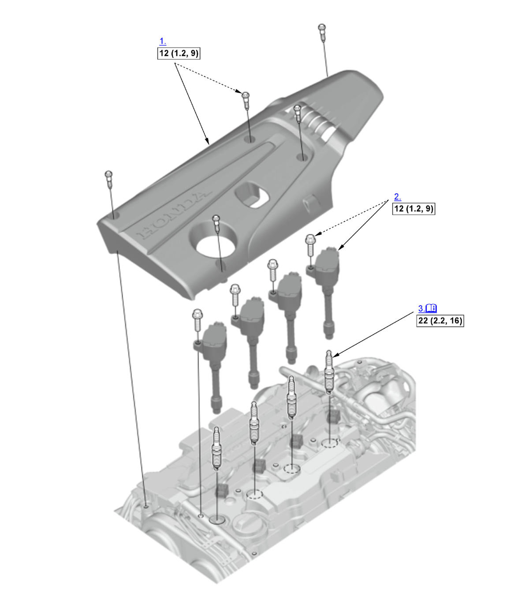

Removal and Installation: Procedure
NOTE:
Numbered call-outs in figure pertain to list numbers in following procedure.
Fig 1: Exploded View Of Ignition Coil And Spark Plug Components With Torque Specifications (K20C1 - 2017-21)

Courtesy of HONDA, U.S.A., INC. |
Detailed information, notes, and precautions |
 |
Torque: N.m (kgf.m, lbf.ft) |
- Engine Cover - Remove
- Ignition Coil - Remove
- Spark Plug - Remove
Note for installation
Apply a small amount of anti-seize compound to the spark plug threads, and screw the spark plugs into the cylinder head, finger-tight, then tighten the spark plugs to the specified torque.
- All Removed Parts - Install
1. Install the parts in the reverse order of removal. - Maintenance Minder - Reset (With Maintenance Minder System)
1. If the Maintenance Minder required to replace the spark plugs, reset the Maintenance Minder with the gauge (see "Resetting the Maintenance Minder").